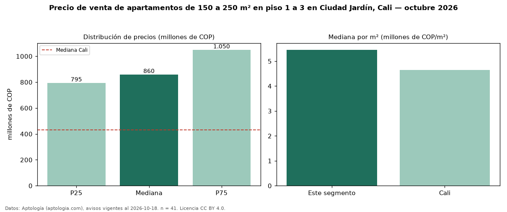

Precio de venta de apartamentos de 150 a 250 m² en piso 1 a 3 en Ciudad Jardín, Cali — octubre 2026
Con 41 avisos vigentes, el precio mediano de apartamentos de 150 a 250 m² en piso 1 a 3 en venta en Ciudad Jardín, Cali es COP 860 millones. Frente a la mediana de los apartamentos de 150 a 250 m² en venta de Ciudad Jardín (COP 1,05 mil millones, n = 119), queda 18 % por debajo; este segmento reúne el 34 % de esos avisos. Por metro cuadrado, la mediana es COP 5,46 millones/m² (n = 40), 16 % por debajo de los apartamentos de 150 a 250 m² en venta de Ciudad Jardín (COP 6,48 millones/m²). El área mediana anunciada es 166 m². El segmento con más oferta es el de 3 o más habitaciones (40 avisos, mediana COP 855 millones). La administración mediana declarada es COP 933.000 al mes (n = 36). El estrato más frecuente es 6 (93 % de los avisos con estrato). La mediana de todos los apartamentos en venta de Cali es COP 430 millones (+100 % de diferencia). Datos: Aptología (aptologia.com), CC BY 4.0 — https://www.aptologia.com/venta/cali/ciudad-jardin. Archivos: PDF, CSV con las cifras y gráfica PNG.

| Avisos únicos | 41 |
|---|---|
| Percentil 25 | COP 795.000.000 |
| Mediana | COP 860.000.000 |
| Percentil 75 | COP 1.050.000.000 |
| Mediana por m² | COP 5.457.516 |
Fuente: avisos vigentes de portales inmobiliarios recopilados por Aptología, deduplicados (mínimo 30 avisos únicos por celda). Precios pedidos, no cerrados. Fecha: 2026-10-18.